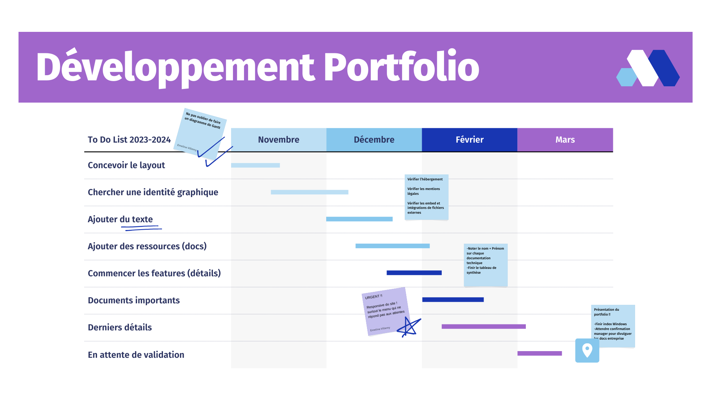

Voici les documents de mon parcours scolaires
Tels que les documents techniques et projets scolaires ou professionnels
- Doc Tech GLPI
- Doc Tech Wireshark
- Index Switch Cisco
- Doc Tech Serveur Web
- Doc Tech Active Directory
- Tableau de synthèse
- Index de commande Linux
- Doc proxmox
- Doc VM
- Proxmox Backup Server
- Diagramme de Gantt
- Gestionnaire de MDP : infrastructure
{kind=link}

Comment Dev ?
Ici vous trouverez un powerpoint où je vous explique les étapes de développement de mon portfolio ainsi que mes idées et mes envies d'apprentissage relatives au développement web ou applicatif.
Ateliers Professionnels
Création d'entreprise fictive
Nous nous sommes organisés et avons créer une entreprise dans le secteur d'activité de notre spécialité d'étude.
Cette entreprise proposait des services de création de sites internet et de leur hébergement de façon responsable et écologique.
Voici les documents liés à cet atelier, notre équipe à collaborer sur l'outils Microsoft Teams afin de partager des informations et de gérer le projet.
Solutions d'infrastructures
Lors de notre deuxième atelier, l'objectif était désormais de trouver des solutions d'infrastructure. Nous avions pour mission de proposer
des améliorations sur le réseau d'une organisation, Ici, M2L (Maison des ligues de Lorraine). Nous leur avons proposer 2 projets.
Mise en place d'une infrastructure
Dans ce troisième et quatrième atelier, chaque groupe se doit de mettre en place une infrastructure comprennant des particularités propre à chacun.
Dans notre groupe ces projets comprennent : PFSense, RustDesk, Active Directory, Proxmox, Proxmox backup server, LACP et des VLANs.